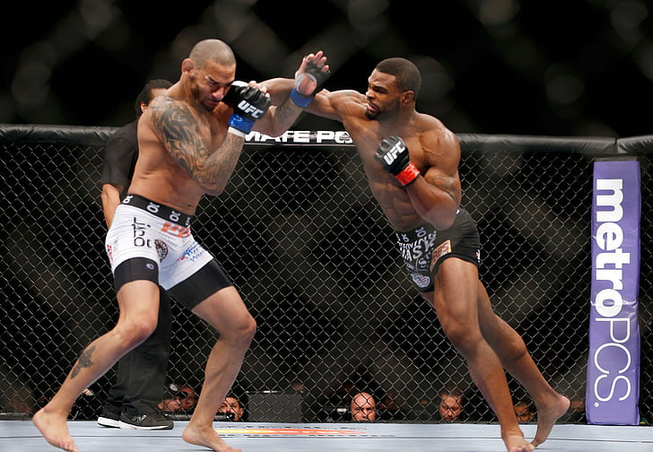

Mixed martial arts is een multidisciplinaire vechtsport die zich richt op het combineren
van technieken uit verschillende vechtkunsten
zoals worstelen judo, karate, kungfu, kickboksen, thaiboksen, boksen en jiujitsu.
Er zijn diverse namen voor MMA, waaronder free fight vale tudo en cage fight
Ook zijn er veel organisaties die MMA-toernooien organiseren.
Veel van die organisaties hanteren tegenwoordig de Unified Rules of Mixed Martial Arts, opgesteld en gebruikt in de VS.
De grootste MMA-organisatie is het Amerikaanse Ultimate Fighting Championship (UFC).
Competitie
Net zoals bij onder meer het boksen, wordt onderscheid gemaakt op basis van verschillende gewichtscategorieën
en op basis van wedstrijdervaring (klasse N, C, B, A).
Een scheidsrechter, arts en de trainers uit beide kampen zien toe op een goed verloop van de wedstrijd.
Hoewel de vechters vaak gehavend uit de strijd komen,
vallen er zelden tot nooit zwaargewonden doordat de vechters in topconditie verkeren en vaak beschikken over een groot incasseringsvermogen.
De wedstrijden duren meestal drie of vijf ronden (variërend van drie tot tien minuten elk)
en worden meestal beslist door een knock-out, tap-out (aftikken), of jurybeslissing.
